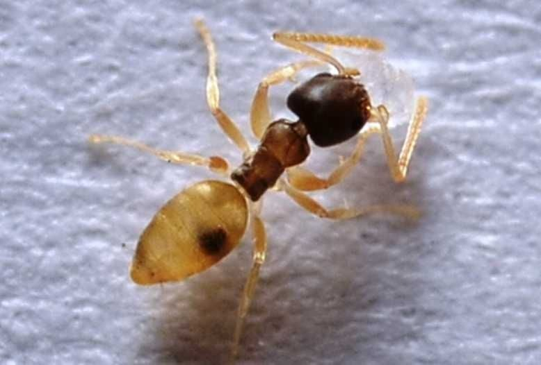

Semut Hantu (Tapinoma melanocephalum)
dianggap sebagai semut pengganggu yang hanya kadang-kadang penting sebagai hama rumah di Florida hingga akhir 1988. Populasi lapangan terbatas di Florida Selatan, meskipun koloni aktif telah dilaporkan sejauh utara Gainesville, di Alachua County (Bloomcamp dan Bieman, komunikasi pribadi) dan Duval County, (Mattis et al. 2004). Tetapi pada tahun 1995, jika tidak sebelumnya, semut hantu itu umum di Florida tengah dan selatan dan telah diangkat ke status hama utama (Klotz et al. 1995). Di negara-negara yang lebih utara, infestasi terbatas pada rumah kaca atau bangunan lain yang menyediakan kondisi yang diperlukan untuk bertahan hidup, karena semut adalah spesies tropis baik yang berasal dari Afrika atau Oriental (Wheeler 1910). Namun, spesies semut yang diperkenalkan ini didistribusikan secara luas oleh perdagangan sehingga tidak mungkin untuk menentukan rumah aslinya (Smith 1965).
Distribusi
Semut hantu dikaitkan dengan kompleks spesies semut yang dikenal sebagai "semut gelandangan" yang tersebar luas di garis lintang tropis dan subtropis di seluruh dunia. Bahkan, T. melanocephalum pernah disebut hanya sebagai "semut gelandangan." Koloni T. melanocephalum dilaporkan dari lokasi terpencil seperti Kepulauan Galapagos (Clark et al. 1982). Di lintang sedang, semut hantu dilaporkan didirikan di rumah kaca dan bangunan lain dengan kondisi yang menguntungkan, bahkan sejauh utara Winnipeg, Manitoba, Kanada, di mana koloni bersarang di blok apartemen di Sungai Assiniboine (Ayre 1977). Populasi dan infestasi semut hantu dilaporkan di banyak wilayah di Amerika Serikat, serta di Kanada, Puerto Riko, dan Kepulauan Karibia. Di Amerika Serikat, semut hantu sudah mapan di Florida dan Hawaii, dan jangkauannya berkembang. Semut mencapai Texas pada tahun 1994 atau 1995, mungkin melalui Galveston pada pengiriman tanaman dari Florida (Chenault 1997). Di negara bagian utara, ia hanya dapat bertahan hidup di rumah kaca dan lingkungan panas lainnya (Smith dan Whitman 1992). Di Florida, semut hantu sebagian besar ditemukan dari Sarasota ke Orlando dan selatan, meskipun itu terjadi sejauh utara Gainesville di Alachua County (Beauchamp 1997, Klotz et al. 1995), dan Duval County (Mattis et al. 2004). Sebuah survei yang dilakukan dengan karyawan pengendalian hama struktural Florida untuk menentukan jenis semut dan jenis masalah semut yang dihadapi dalam pengendalian hama komersial dan rumah tangga mengungkapkan bahwa delapan spesies semut diidentifikasi sebagai hama utama di Florida. Dari jumlah tersebut, yang paling umum adalah semut api impor merah, Solenopsis invicta Buren, semut hantu, Tapinoma melanocephalum, (Fabricius); dan semut gila, Paratrechina longicornis (Latreille). Setiap spesies terdiri dari 14% dari sampel yang dikirimkan (Klotz et al. 1995).
Deskripsi
Pekerja semut hantu sangat kecil, panjang 1,3 hingga 1,5 mm dan monomorfik (satu ukuran). Mereka memiliki antena 12-segmented dengan segmen secara bertahap menebal ke arah ujung. Antena scapes melampaui batas oksipital. Kepala dan dada berwarna coklat tua gelap dengan gaster dan kaki buram atau putih susu (Creighton 1950). Toraks tidak bertulang.Pekerja semut hantu sangat kecil, panjang 1,3 hingga 1,5 mm dan monomorfik (satu ukuran). Mereka memiliki antena 12-segmented dengan segmen secara bertahap menebal ke arah ujung. Antena scapes melampaui batas oksipital. Kepala dan dada berwarna coklat tua gelap dengan gaster dan kaki buram atau putih susu (Creighton 1950). Toraks tidak bertulang.
Biologi dan Perilaku
Semut hantu sangat mudah beradaptasi dalam kebiasaan bersarangnya. Ini bersarang dengan mudah di luar ruangan atau di dalam ruangan. Koloni mungkin berukuran sedang hingga besar yang mengandung banyak betina yang bereproduksi (poligini). Umumnya, koloni menempati situs lokal yang terlalu kecil atau tidak stabil untuk mendukung seluruh koloni besar. Situs-situs tersebut termasuk jumbai rumput mati tetapi lembab sementara, batang tanaman, dan rongga di bawah detritus di habitat terbuka yang berubah dengan cepat (Oster dan Wilson 1978). Di dalam ruangan, semut menjajah kekosongan dinding atau ruang antara lemari dan alas tiang. Ini juga akan bersarang di tanaman pot (Smith dan Whitman 1992). Dengan demikian, koloni dipecah menjadi subunit yang menempati situs sarang yang berbeda dan bertukar individu bolak-balik di sepanjang jejak bau (Oster dan Wilson 1978). Hölldobler dan Wilson (1990) melaporkan bahwa semut hantu adalah sarang oportunistik di tempat-tempat yang kadang-kadang tetap layak huni hanya beberapa hari atau minggu. Beberapa ratu dapat tersebar di beberapa subkoloni. Biasanya, bersarang terjadi di daerah yang terganggu, di pot bunga, di bawah benda-benda di tanah, di bawah kulit kayu yang longgar, dan di pangkal daun palem. Di dalam ruangan, semut bersarang di ruang kecil seperti retakan, ruang antar buku, atau rongga dinding. Pengumpul dalam ruangan sering datang dari luar. Ini adalah hama yang sangat umum di dalam rumah (Ferster et al. 2002). Koloni baru mungkin dibentuk oleh tunas. Ini terjadi ketika satu atau lebih betina reproduksi, ditemani oleh beberapa pekerja dan mungkin beberapa induk (larva dan kepompong) meninggalkan koloni yang mapan untuk tempat bersarang baru. Tampaknya tidak ada pertikaian antara anggota koloni atau sarang yang berbeda (Smith dan Whitman 1992). Kebiasaan bersarang semut hantu mirip dengan semut Firaun, Monomorium pharaonis (Linnaeus) (Smith dan Whitman 1992). Pekerja memiliki kebiasaan berlari cepat dan tidak menentu ketika terganggu. Mereka menyukai melon dan cenderung serangga ekskresi melon. Mereka juga memakan serangga mati dan hidup (Smith 1965). Ketika pekerja ditemukan membuntuti, gerakan mereka lebih lambat dan disengaja. Pada pemeriksaan dekat beberapa pekerja trailing dapat dilihat membawa induk (larva dan kepompong) (Ferster et al. 2002). Mereka akan memasuki struktur dari sarang dekat fondasi atau dari tanaman yang menghubungi bangunan (Smith dan Whitman 1992).